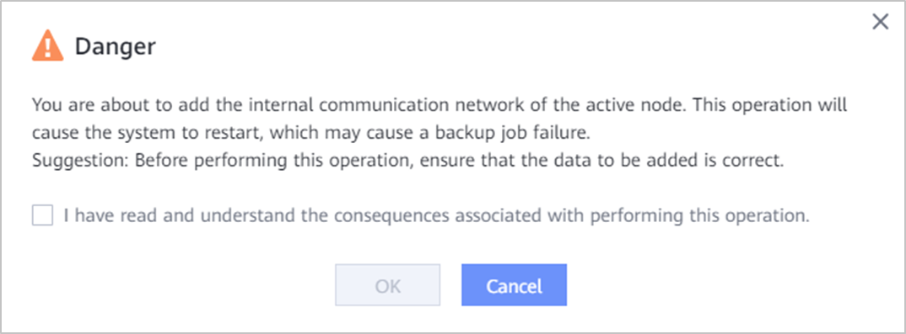

If you want to use cluster HA, perform operations in this section to add an internal communication network for the active node for communication among nodes in the backup cluster.
Prerequisites
- Before configuring cluster HA, ensure that Network Time Protocol (NTP) automatic synchronization has been configured for each node on DeviceManager. For details, see "Setting the Device Time" in the OceanProtect Appliance 1.5.0-1.6.0 Administrator Guide.
- At least two IP addresses have been reserved for the internal communication network of the active node.
Precautions
- After the internal communication network of the active node is added, the system restarts and backup jobs may fail.
- After the internal communication network is added and member nodes are added, the internal communication network cannot be modified. Exercise caution when performing this operation.
Procedure
- Choose .
- Click Backup Cluster.
- In the row that contains the active node, choose .
- Configure the internal communication network.
Table 1 describes the parameters.
Table 1 Internal communication network parameters Parameter
Description
IP Address Type
The value can be IPv4 or IPv6.
Subnet Mask
Subnet mask of the IPv4 address of the internal communication network.
NOTE:This parameter is available only when IP Address Type is IPv4.
Prefix
Prefix of the IPv6 address of the internal communication network.
NOTE:This parameter is available only when IP Address Type is set to IPv6.
IP Address1
User-defined IP address 1 of the internal communication network, which is used as the IP address of the internal database. Ensure that this address is different from other IP addresses. Otherwise, an IP network conflict occurs.
IP Address2
User-defined IP address 2 of the internal communication network, which is used as the IP address of the internal infrastructure. Ensure that this address is different from other IP addresses. Otherwise, an IP network conflict occurs.
Gateway
Gateway of the internal communication network.
VLAN Enabled
This option is deselected by default. Before selecting this option, ensure that the VLAN has been configured for the service. After this option is selected, the configured service ports will apply to the VLAN.
VLAN ID
This parameter is required after Enable VLAN is selected. This ID is a new ID defined by the user when the VLAN is configured.
Port Type
The value can be Ethernet Port or Bond Port.
- After selecting Port Type, select service ports in the Available Ports area. You can select one or more ports to configure service ports. In the Selected Ports area, click
 in the row where the port to be removed resides to remove it from the Selected Ports area, or click Delete All to remove all ports from the Selected Ports area.
in the row where the port to be removed resides to remove it from the Selected Ports area, or click Delete All to remove all ports from the Selected Ports area.After selecting Port Type, you can perform the following operations:
- Port selection: You can select Creating a port or Reusing the configured port.
- Port Sharing (optional): This option is available when Port Type is set to Bond Port. If Port Sharing is enabled, the number of required ports can be reduced, but the reliability of the internal communication network decreases.
For details about the minimum number of ports that need to be selected for each controller of different device types in different scenarios, see Least Ports Selected per Controller on the Internal Communication Network.
- (Optional) In the Advanced area, select Configure Route to configure a route for the internal communication network. Choose Add to add the corresponding route. The route type can be Network segment route, Host route, or Default route.

If a gateway has been configured for the logical port, default routes cannot be added.
- Click OK.
- In the Danger dialog box that is displayed, confirm the information, select I have read and understand the consequences associated with performing this operation., and click OK.

To modify or delete an added internal communication network, choose or on the right of the row that contains the active node. After a member node is added subsequently, the internal communication network cannot be modified or deleted.